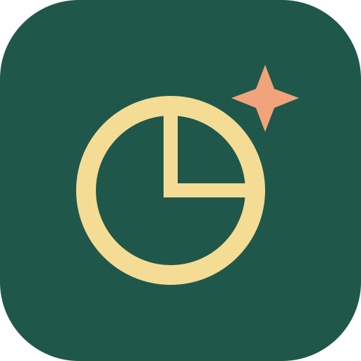

从六年级出发 · 每次学懂一点
今天，弄懂一个小问题。
选一课，动手试试，再把理由说清楚。
正在读取本机进度…
TY敏捷课堂
基础知识与解题方法 · 每课固定 5 题
马斯克的太空学校
先判断，再动手验证，最后接一个新任务。
每次尝试自动留在本机。「学习记录」里可回看、截图和导出备份。

好奇心小站从六年级出发 · 每次学懂一点
选一课，动手试试，再把理由说清楚。
正在读取本机进度…
基础知识与解题方法 · 每课固定 5 题
先判断，再动手验证，最后接一个新任务。
每次尝试自动留在本机。「学习记录」里可回看、截图和导出备份。